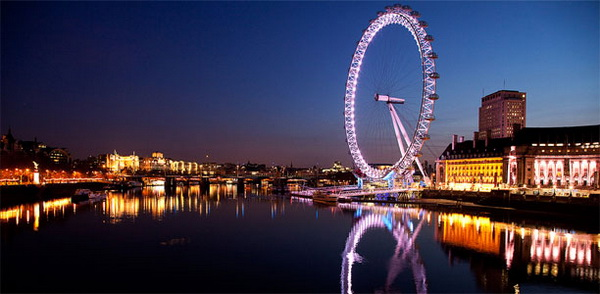

Fun with HTML
Saya Belajar HTMLHTML itu mengasyikan
| No | Photo | City | Description |
| 1 |  |
Abu Dhabi, Uni Emirat Arab | Abu Dhabi adalah kota mewah sekaligus moderen. Penggunaan teknologi tinggi hingga teknologi ramah lingkungan bisa Anda temukan di kota ini, demikian halnya dengan pusat-pusat seni dan budaya. Dubai adalah kota ‘buatan’ yang didesain oleh para arsitek kelas dunia, seerti Zaha Hadid, Daniel Libeskind, Sir Norman Foster, Jean Nouvel dan Frank Gehry. Tak heran jika Dubai memiliki seni artistektur moderen dilengkapi teknologi penunjang yang tak Anda temukan di kota lain. |
| 2 |  |
Helsinki, Finlandia | Helsinki adalah kota yang tenang dengan bangungan-bangunan model Skandinavia masih tersisa di beberapa sudut kota. Di balik kesan jadulnya itu, Helsinki justru dikenal sebagai salah satu kota termoderen di Eropa. Di kota ini Anda bisa menemukan zona WiFi tersebar dimana-mana. Markas besar perusahaan ponsel Nokia juga ada di sini. Bagi Anda yang ingin merasakan kehidupan kota moderen Eropa dengan sentuhan sejarah abad masa lalu, Helsinki bisa menjadi pilihan terbaik.. |
| 3 |  |
Yokohama, Jepang | Kota Yokohama telah mengalami pembaruan yang luar biasa di segala bidang. Selama bertahun-tahun Yokohama tertutup kemoderenan Tokyo namun dengan usaha keras kota ini sekarang telah menjadi kota super moderen yang tidak kalah lagi dibandingkan dengan ibu kota Jepang. Salah satu inovasi moderen di kota Yokohama adalah renovasi pelabuhan tua Minato Mirai 21. Pelabuhan ini dibangun ulang menjadi gedung pencakar langit yang mengedepankan desain berbahan kaca dan logam dan menjadi gedung paling tinggi di Jepang. Perusahaan otomotif dan elektronik seperti Nissan dan JVC bermarkas di Yokohama sementara Sony juga memiliki sebuah gedung pusat penelitian di kota ini. |
| 4 |  | London, Inggris | Berbagai gedung tua memang masih dipertahankan sebagai ciri khas London tetapi kota ini juga telah menjadi salah satu kota paling moderen di Eropa. Teknologi inovasi di bidang transportasi, Oyster Card, dimulai di kota ini. Oyster Card memungkinkan para penumpang tidak lagi perlu membayar biaya transportasi dengan uang tunai. Sementara bandara Heathrow juga memiliki teknologi canggih yang menghubungkan airport ini dengan semua jalur kereta api di London. Heathrow juga merupakan pendahulu untuk sistem Urban Light Transit, yaitu sebuah alat tranportasi dengan desain futuristik yang mampu mengambil penumpang dari airport ke sejumlah pos tujuan penerbangan.. |
| 5 |  |
San Fransisco / Silicon Valley | Kota San Fancisco disebut sebagai kota metropolitan paling canggih di dunia. Kota ini dilengkapi berbagi produk inovasi teknologi tinggi dan digital. Lihat saja, perusahaan IT ternama seperti Apple, Facebook, Google, Twitter, Eletronic Arts dan ribuat perusahaan IT lainnya ada di kota ini. San Francisco menjadi tempat terbaik bagi Anda yang ingin mengembangkan kemampuan di bidang IT dengan cara magang di Apple, Google atau ribuan startups yang ada di seluruh penjuru kota.. |